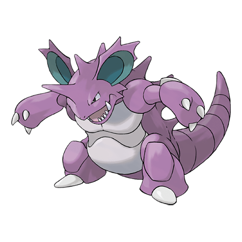

Нидокинг

Nidoking — Покемон 1 поколения под номером 34 в Покедекс. Обитает он в регионе Kanto и относится к Ядовитому и Земляному типу. Это финальная стадия эволюции Нидоран. Толстый хвост Нидокинга обладает огромной разрушительной силой. Одним взмахом он может повредить линию электропередач. Если этот Покемон начинает буйствовать, его уже не остановить.
Тип и слабости:
Ядовитый
Земляной
Эволюция
# 034 Нидокинг
Финальная стадия